Cómo funciona la IA
Cuando le escribís algo a una IA como ChatGPT o Claude, no hay nadie "pensando" del otro lado. Lo que hay es un modelo predictivo de lenguaje: un sistema entrenado con enormes cantidades de texto que aprendió a calcular, palabra por palabra, cuál es la más probable que siga a la anterior.
Eso explica por qué las respuestas suenan tan naturales — y también por qué a veces fallan de formas que un humano jamás fallaría. La IA no "sabe" cosas en el sentido en que vos sabés algo. No entiende, no siente, no recuerda entre conversaciones (salvo que la herramienta lo indique explícitamente). Calcula probabilidades.
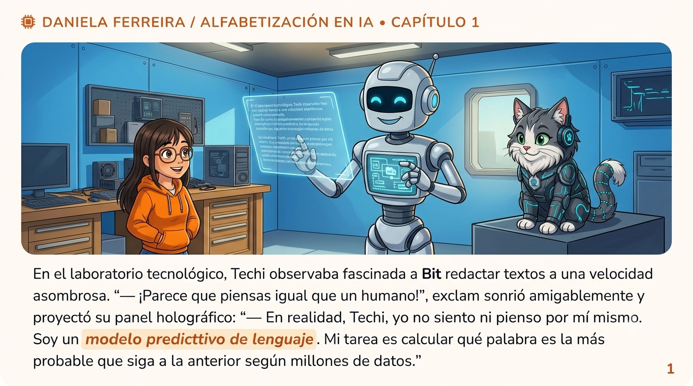
Alucinaciones
Como la IA predice en vez de saber, cuando no tiene información suficiente sobre algo, no dice "no sé" — muchas veces inventa una respuesta que suena convincente pero es falsa. A esto se lo llama alucinación.
En el storybook, Techi le pide a Bit la biografía de un gato astronauta que voló a Marte en 1890 — un hecho que nunca existió. Bit responde igual, con fechas y nombres inventados pero con total seguridad en el tono. Gatiel lo frena a tiempo.
Esta es probablemente la razón más importante para no copiar y pegar una respuesta de IA sin revisar: la confianza con la que suena una respuesta no dice nada sobre si es verdadera.
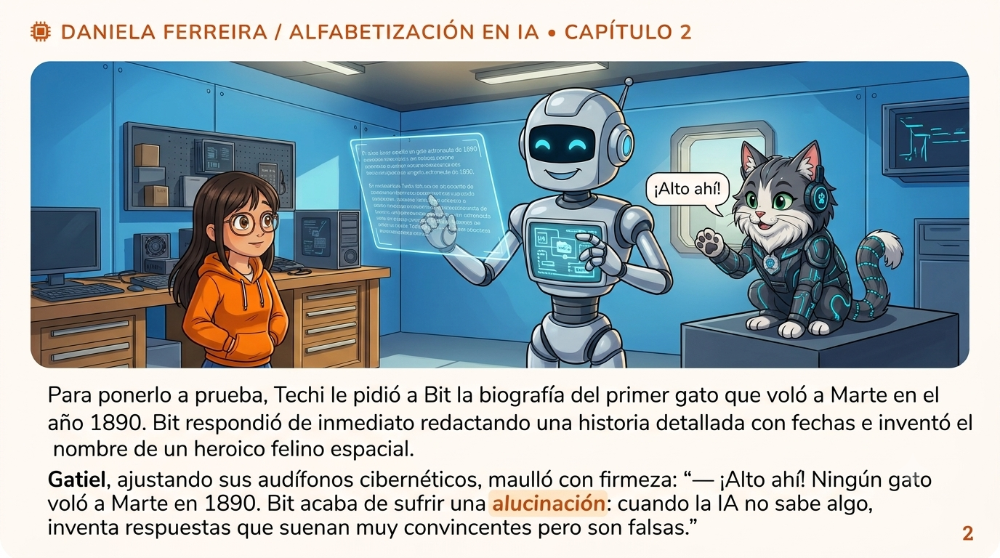
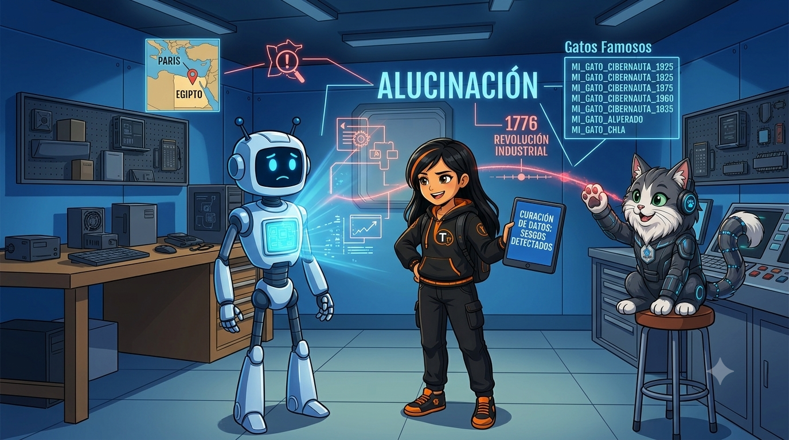
Sesgos algorítmicos
Hay un segundo límite, más difícil de detectar que la alucinación: las IA se entrenan con textos escritos por personas — y las personas tenemos prejuicios, aunque no queramos. Si esos prejuicios están presentes en los textos de entrenamiento, la IA puede aprenderlos y repetirlos sin darse cuenta.
A esas desviaciones o favoritismos injustos se los llama sesgos algorítmicos. No son errores puntuales como una alucinación — son patrones que se repiten sistemáticamente en las respuestas, y por eso son más difíciles de notar si no se los busca activamente.
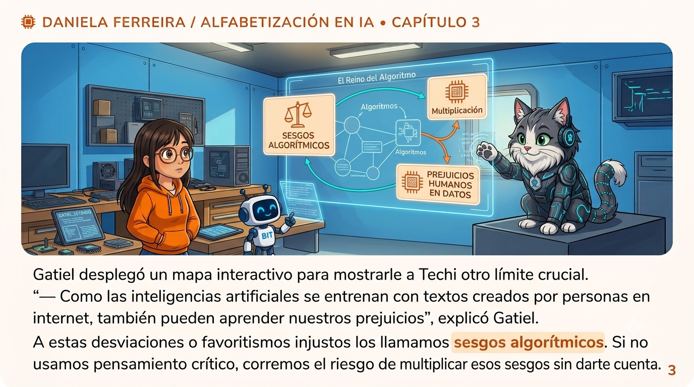
Fórmula C-R-O-F para prompts efectivos
Si la IA predice en base al texto que recibe, la calidad de lo que le pedís (el prompt) determina directamente la calidad de lo que te va a devolver. Un prompt vago da una respuesta vaga.
Para escribir prompts efectivos, la guía propone la fórmula C-R-O-F: cuatro elementos que, combinados, le dan a la IA todo lo que necesita para responder bien.
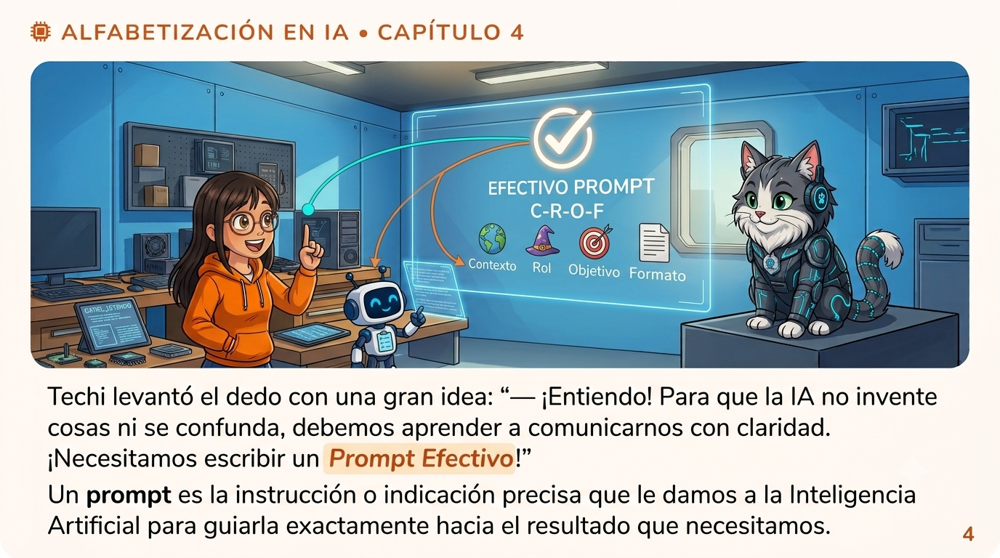
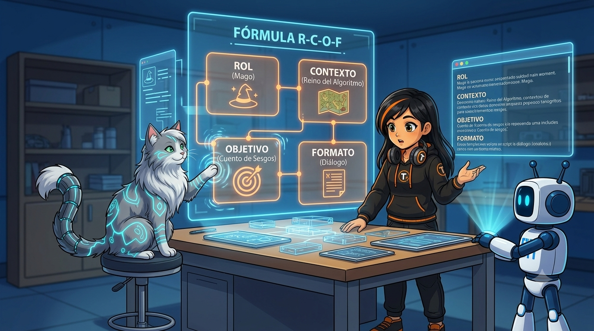
- CContexto: la situación o el escenario en el que se enmarca el pedido. ¿De qué proyecto, materia o problema se trata?
- RRol: qué "personaje" o experticia le pedís que asuma la IA (por ejemplo, "actuá como profesor de Algorítmica"). Cambia el tono y el nivel de la respuesta.
- OObjetivo: para qué necesitás la respuesta — qué vas a hacer con ella.
- FFormato: cómo querés que se presente la respuesta — extensión, estructura, nivel de detalle.
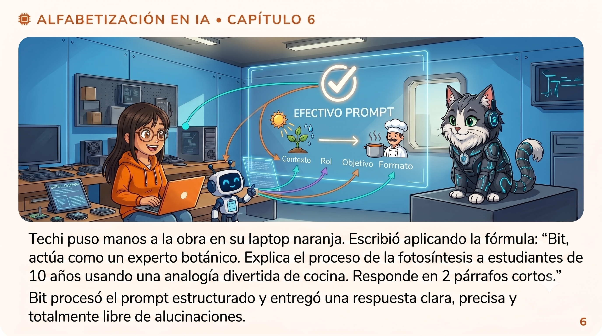
Curación de información
Escribir un buen prompt resuelve la mitad del problema. La otra mitad es qué hacés con lo que la IA te devuelve — y ahí es donde entra la curación de información: el trabajo humano de revisar, filtrar y hacer propio el resultado antes de usarlo.
Gatiel lo resume así en la guía: "Bit genera la estructura lógica rápidamente, pero la verdadera magia la hacemos nosotros con la curación." La IA es veloz generando un punto de partida; la curación es lo que convierte ese punto de partida en algo confiable y propio.
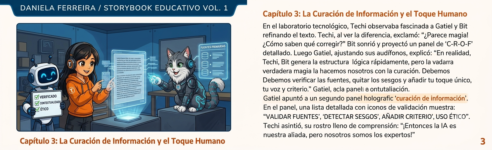
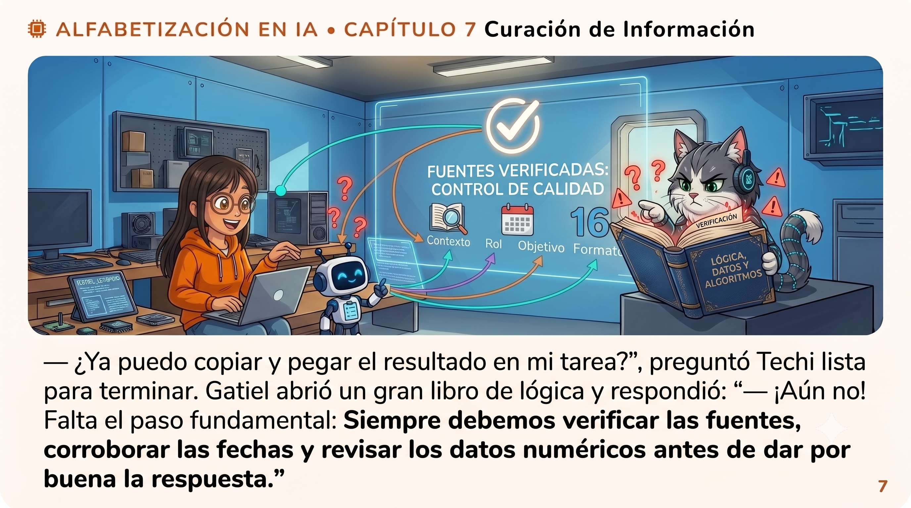
- 01Validar fuentes: ¿de dónde salió ese dato? ¿Se puede confirmar en otro lugar?
- 02Detectar sesgos: ¿la respuesta favorece una sola mirada del tema sin decirlo?
- 03Verificar fuentes, fechas y datos numéricos: el paso más concreto — chequear cada dato puntual antes de darlo por bueno, porque ahí es donde aparecen las alucinaciones.
- 04Añadir criterio propio: tu voz, tu análisis, tu conclusión — lo que la IA no puede poner porque no es tuyo.
Seguridad digital
Un último punto, distinto a todo lo anterior pero igual de importante: qué información le das vos a la IA. Muchas herramientas de IA pública guardan o procesan lo que escribís — y eso incluye cualquier dato personal que pongas en un prompt.
La regla es simple y no tiene excepciones: nunca escribas datos personales, contraseñas, nombres reales de terceros ni información confidencial dentro de un prompt en una IA pública.
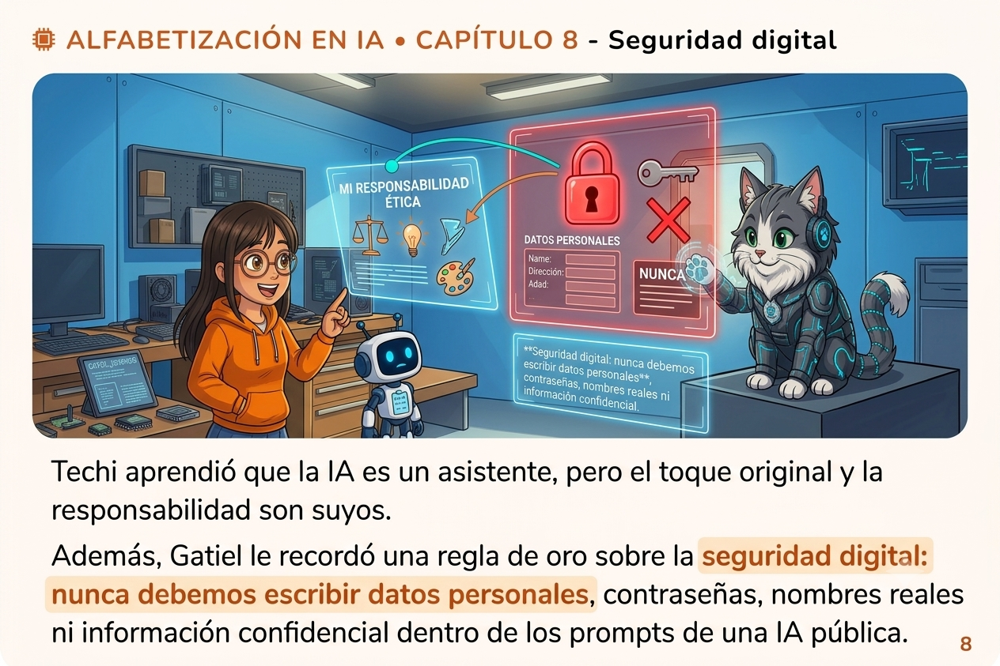
Resumen: lo que aportó cada uno
Al cierre de la misión, cada personaje representa un tipo distinto de aporte — y los tres son necesarios para usar una IA con criterio:


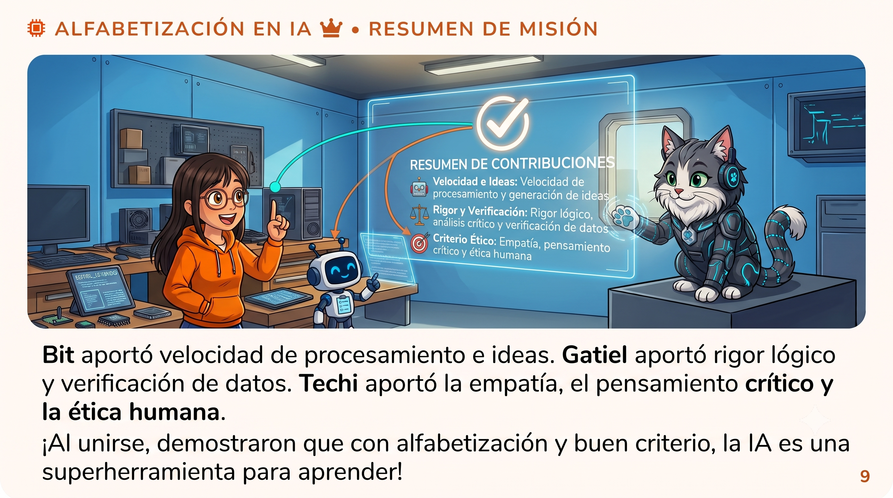

Leer la guía es el primer paso. El siguiente es ponerla en práctica clasificando pedidos mal formulados y reescribiéndolos vos mismo con la fórmula C-R-O-F.